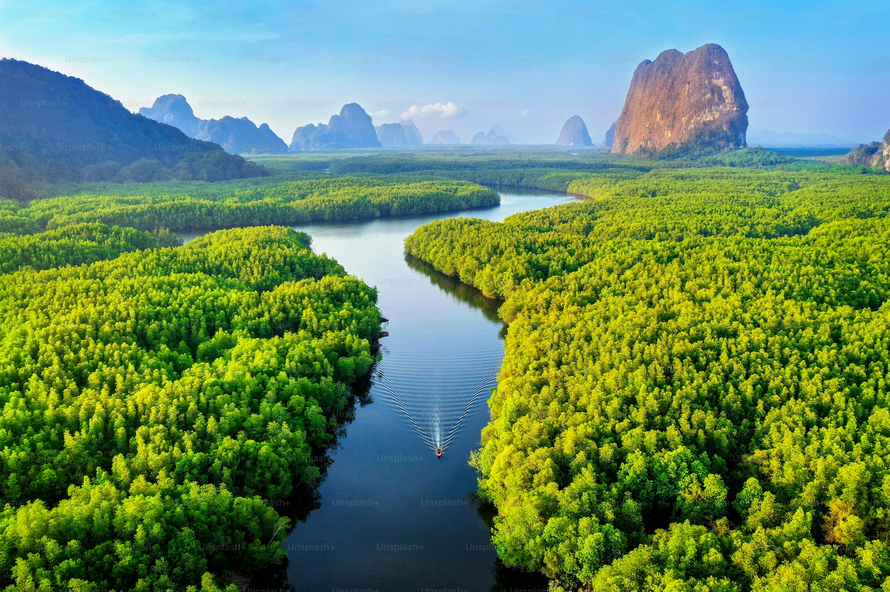

FOREST
Forests can occur wherever the temperatures rise above 10 °C (50 °F) in the warmest months and the annual precipitation is more than 200 mm (8 inches). They can develop under a variety of conditions within these climatic limits, and the kind of soil, plant, and animal life differs according to the extremes of environmental influences.
CYCLING

Cycling,[1] also known as bicycling[2] or biking,[3] is the activity of riding a bicycle or other type of cycle. It encompasses the use of human-powered vehicles such as balance bikes, unicycles, tricycles, and quadricycles. Cycling is practised around the world for purposes including transport, recreation, exercise, and competitive sport..
READING
Reading practice to help you understand simple texts and find specific information in everyday material. Texts include emails, invitations, personal messages, tips, notices and signs.Reading practice to help you understand texts with everyday or job-related language.